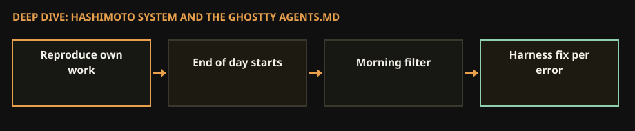

Deep Dive: Hashimoto System and the Ghostty AGENTS.md
Six adoption steps, a daily agent routine with exact times, and the real production AGENTS.md from the Ghostty repo, read in full. Sources: Mitchell Hashimoto, My AI Adoption Journey, 5 February 2026, and github.com/ghostty-org/ghostty AGENTS.md. Confidence: High.

Step 1: drop the chatbot
Use an agent that can read files, run programs, and make HTTP requests. Chat alone caps the gain. His proof case: Gemini reproduced the Zed command palette in SwiftUI, and a light edit of that output ships in Ghostty for macOS.
Step 2: reproduce your own work
Do each manual commit twice: once by hand, once with the agent, with no sight of the manual version. Fight the agent to equal quality. Four lessons fall out: split work into clear tasks, split vague work into a plan session and an execution session, give the agent a way to verify its own work, and learn when an agent is the wrong tool.
Step 3: End of Day Agents, the daily routine
- Block the last 30 minutes of the work day. No code in this block. Only agent starts.
- Start deep research surveys: one agent per library or option, each returns pros, cons, activity, license, and sentiment.
- Start parallel probes on vague ideas. The goal is light, not a ship. Most probes die. The map of the space is the product.
- Start issue and PR triage with the gh CLI, agents in parallel. Hard rule: agents never respond in public. Reports only.
- Stop. Agents finish in under 30 minutes in his report. No all night loops.
Step 4: the morning slam dunk filter
Start the day on the triage reports. Keep only near certain wins. Run them one at a time in the background during deep work. Turn agent desktop notifications off. Check the agent at natural breaks only. The filter is the skill: a warm start beats a cold start, and a wrong warm start costs more than none.
Step 5: harness engineering
His rule, in his words: anytime an agent makes a mistake, engineer a fix so the agent never makes that mistake again. Two forms. Form one: a line in AGENTS.md that names the wrong command or the right API. Form two: a programmed tool, such as a screenshot script or a filtered test runner, plus an AGENTS.md line that points the agent at the tool.
Step 6: always one agent running
His current state: one agent running for 10 to 20 percent of a work day, deep mode runs of 30 plus minutes. One agent, not a fleet. The counter case to Cherny and Yegge in this guide: depth over count, with a harness that compounds.
The Ghostty AGENTS.md, full structure
The file runs near 40 lines. Every line maps to a past agent error, per Hashimoto. Structure, complete:
Title: Agent Development Guide
1. Commands
Build: zig build (macOS: add -Demit-macos-app=false to skip
the app bundle and speed compilation)
Test: zig build test
Rule: prefer targeted tests with -Dtest-filter, full suite is slow
Format Zig: zig fmt .
Format Swift: swiftlint lint --strict --fix
Format rest: prettier -w .
2. libghostty-vt (a sub library with its own build)
Build: zig build -Demit-lib-vt
Build WASM: zig build -Demit-lib-vt -Dtarget=wasm32-freestanding
-Doptimize=ReleaseSmall
Test: zig build test-lib-vt -Dtest-filter=<filter>
Rule: prefer this test when the change sits in a lib file
Portability rule: all C enums in include/ghostty/vt/ end with
a _MAX_VALUE = GHOSTTY_ENUM_MAX_VALUE sentinel
3. Directory Structure
Shared Zig core: src/
macOS app: macos/
GTK app: src/apprt/gtk
4. Issue and PR Guidelines
Never create an issue. Never create a PR.
Read the shape, not the content. Commands first, with the fast variant named. One scoped sub build. One portability rule from a real past break. A three line map. Two hard prohibitions. Nothing else earns a line. The repo also ships vetted agent prompts in .agents/commands, such as a GitHub issue diagnosis command that explains the problem and suggests a plan, with read only access.
Apply this to your work
Your AGENTS.md files for study repos can copy this shape at once: exact build and test commands with the fast targeted variant, one scoped rule per sub project, a three line map, and hard prohibitions that match your standing orders, such as no pushes without a pass and no edits to live masters before a pilot gate. Your end of day slot also maps to your life coach rhythm: a 30 minute agent start block before the night review, with triage reports on papers, roles, and study queues waiting at the morning battle plan.
Replication checklist
- Write your repo AGENTS.md in the Ghostty shape: commands, scoped rules, map, prohibitions. Cap at 50 lines.
- Start the 30 minute end of day block for one week. Three starts per day, no more.
- Morning rule: filter to slam dunks only. Run one at a time. Notifications off.
- Each agent error this week becomes one AGENTS.md line or one checker tool. Log both forms.
Prompt file: prompts/end-of-day-agents.md.
Visual map of this page
Two views of one page: a Mermaid flow for work order, rendered by the local Mermaid library in this folder, and a markmap for concept groups.
Mermaid source, for offline read
flowchart TD
A[Last 30 min of day] --> B[Surveys, probes, triage]
B --> C[Reports by morning]
C --> D{Slam dunk?}
D -->|yes| E[Background run, alerts off]
D -->|no| F[Drop]
E --> G[Error becomes rule or tool]
G --> AHow to read the flow diagram. Step 1: start at the first box. Step 2: follow each arrow to the next stage. Step 3: at a branch box, read both paths before a choice. Step 4: a loop arrow means work returns for one more pass vs a test.
Markmap: concepts on this page
- Deep Dive: Hashimoto System and the Ghostty AGENTS.md
- Six steps
- Agent not chat
- Reproduce work
- End of day
- Slam dunks
- Harness
- One agent running
- Ghostty file
- Commands
- Scoped rules
- Map
- Prohibitions
- Time
- 30 min starts
- Morning filter
- Six steps